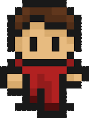

O nama
Naša priča
Priča o bendu KRONOS započela je prije nekoliko godina u Velikoj Gorici. Projekt su osmislili braća blizanci, Samuel i Eli, kao izraz svoje zajedničke strasti prema glazbi. Iako smo projekt pokušali pokrenuti više puta, životne okolnosti i prepreke stalno su nas vraćale na početak. Pravi preokret dogodio se preseljenjem iz Velike Gorice u Zadar. Dolazak u novu sredinu donio je svježinu i energiju koja nam je nedostajala. U Zadru smo upoznali Dinu, koji je svojom vještinom na žičanim instrumentima savršeno upotpunio naš zvuk. Tako je 2025. godine KRONOS konačno postao stvarnost.
Članovi benda
